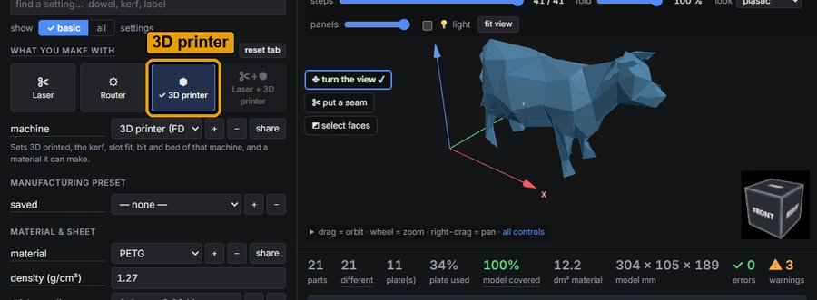
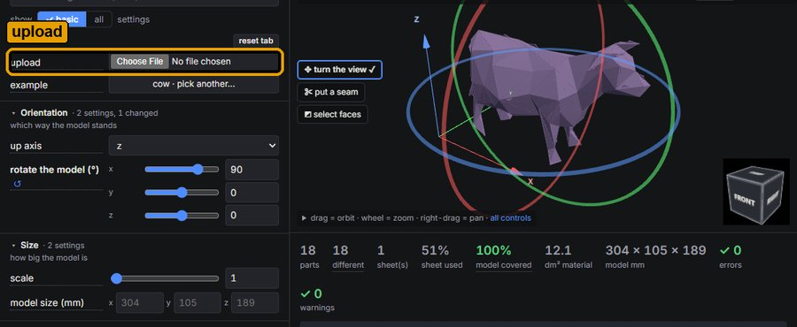
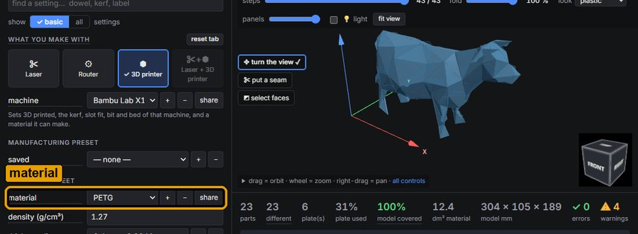
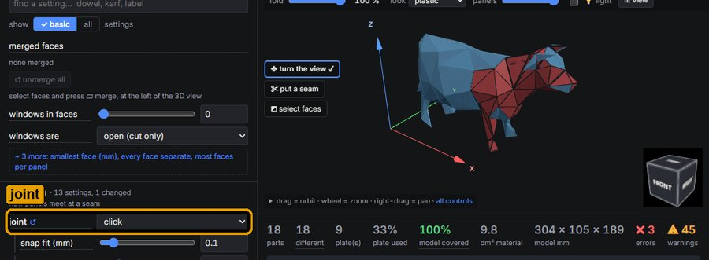
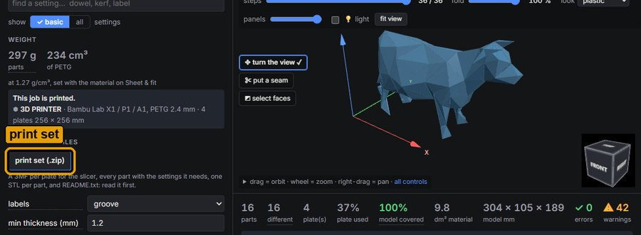

3D print a model as flat parts
Lamina cuts a model into flat parts, and a 3D printer can make those parts too. Each part lies flat on the bed, and a shape larger than the bed prints as many parts. Lamina puts the parts on your printer's plates and gives your slicer the files. It does not make G-code. Lamina is free and runs in your browser.
Choose your machine first
At the top of Sheet & fit, pick the machine: laser, router, 3D printer, or laser + 3D printer. With 3D printer, the sheet is your printer's bed and the material is PLA or PETG. With laser + 3D printer, the laser cuts the layers and the printer makes the standoffs and pins between them. Settings that your machine does not need wait behind one click.

Steps
The pictures show the cow example that the link opens, in folded panels: they print flat and fold up. Stacked slices and ribs print as flat plates the same way. An orange ring with a label marks the control to use.
- Open Lamina on Folded Panels. It opens on the Model tab, with
the cow example unfolded into panels.

- In upload, choose your model file.

- On the Sheet & fit tab, under What you make with, click 3D printer.

- In machine, pick your printer. Bambu Lab and Prusa printers are on the list with their bed size. For
another printer, type its bed size.

- In material, pick PLA or PETG.

- On the Technique tab, set joint to click or snap. These joints close the seams
without glue.

- Read the errors and warnings under the 3D view. Correct every error before you print. The
buttons under a message fix it.

- On the Export tab, click print set (.zip). It holds one 3MF for each plate, at full size.

- Open each 3MF in your slicer, for example OrcaSlicer. Then slice and print.
- Snap the number tags off the small parts. Put the parts together with the assembly key.
What the print files carry
- Settings for each part. The layer height, bridges and supports of each part are in the 3MF, and OrcaSlicer applies them.
- A number on every part. A small part gets its number on a thin tag that you snap off.
- Clips and pins on the same plates as the parts they join.
- An assembly key and a README in each download.

Panels that fold, click or snap
A folded panel prints at its full thickness with a V groove along every fold. The thin skin at the bottom of the groove is the hinge, and the fold stops at the model's shape. Two printed joints close the seams without glue:
- Click: a tooth snaps under a bar.
- Snap: a closed clip slides along a wall on each panel.
Both joints bend up to 100° out and 71° in. Try them on the example fold_box. For a lamp, try fold_lamp.

Laser-cut layers on printed standoffs
On stacked slices, set a gap between layers and connect with = standoff. The laser cuts the layers, and 3D-printed posts hold them apart. The machine changes to laser + 3D printer by itself. Try the example shade.

Test-print before you cut
For a laser or router job, the 3MF prototype prints every part flat and scaled down, with its label in the surface. Print it, put it together, and then cut the real sheets.